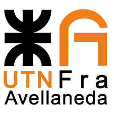
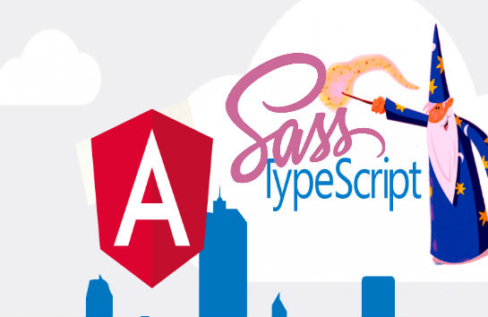

Mi nombre es Agustin Cantero, soy un estudiante de la tecnicatura en programacion de la Utn
Facultad Regional de Avellaneda. Soy oriundo de Bahia Blanca Provincia de Buenos Aires, naci el 21 de febrero de 1986.
Me considero una persona responsable, respetuosa, con ganas de aprender, crecer y
desarrollarme.
Mis objetivos a corto plazo son recibirme para poder seguir creciendo profesionalmente y
alcanzar mis metas.
¿Que es esto?

Esta Sala de Juegos es un trabajo practico necesario para aprobar la cursada correspondiente
a la cursada de Laboratorio 4.
Cada universidad, cada facultad, cada carrera y obviamente cada materia en particular tiene estrategias
didácticas y formas de evaluación diferentes.
A pesar de que en muchos casos las universidades intentan estandarizar la forma de dictar clase para generar
un orden en las planificaciones cuatrimestre a cuatrimestre, las formas de evaluación son elementales
tanto para las instituciones y profesores como para los alumnos.
A través de la evaluación formativa el educador busca información en el alumno para lograr comprender cómo
se
está produciendo el proceso de aprendizaje y poder reajustar los objetivos pedagógicos.
Y para el alumno es una muestra del progreso que está logrando y si puede aplicar, materializar y
darle visibilidad a la comprensión del tema.
Según Black y William (1998), la evaluación formativa, ayuda a que los estudiantes sean independientes a la
hora del aprendizaje, es decir, se presenta como receptor, autorregulador y centro de esa misma evaluación.
¿Dónde Funciona?

Con las tecnologias WEB que permiten desarrollar aplicaciones multiplataforma.
Principalmente orientada a la experiencia del usuario, garantizando que su funcionamieto sea fluido y
pensado
en el comportamiento del usuario y en la funcionalidad.
Para los sistemas operativos lideres en el mercado del consumo masivo.